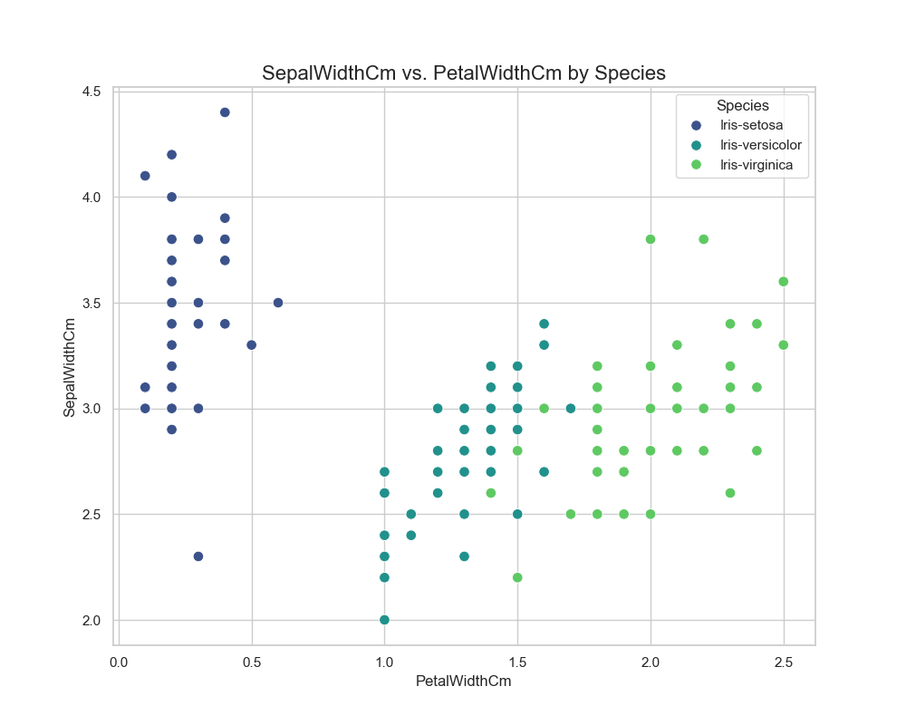
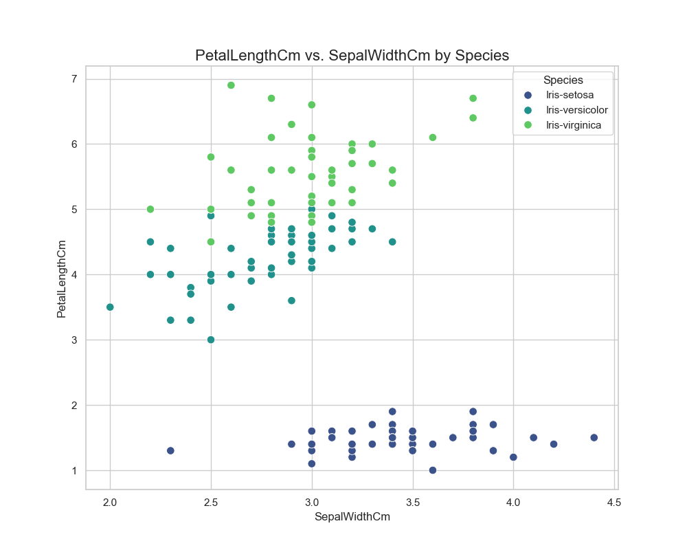

### An Introduction to Fuzzy System **A Case Study with the Iris Dataset** --- #### Iris Dataset Samples | Sepal Length | Sepal Width | Petal Length | Petal Width | Species | |:------------:|:-----------:|:------------:|:-----------:|:------------:| | 5.1 | 3.5 | 1.4 | 0.2 | Setosa | | 4.9 | 3.0 | 1.4 | 0.2 | Setosa | | 7.0 | 3.2 | 4.7 | 1.4 | Versicolor | | 6.4 | 3.2 | 4.5 | 1.5 | Versicolor | | 6.3 | 3.3 | 6.0 | 2.5 | Virginica | | 5.8 | 2.7 | 5.1 | 1.9 | Virginica | --- #### Data Balance Check <p align="center"> </p> --- #### Feature Selection: Data Visualization <table style="width:100%; border: none;"> <tr style="border: none;"> <td style="width:50%; text-align:center; border: none;"> <br><sub>SL SW</sub> </td> <td style="width:50%; text-align:center; border: none;"> <br><sub>SL PL</sub> </td> </tr> <tr style="border: none;"> <td style="width:50%; text-align:center; border: none;"> <br><sub>SL PW</sub> </td> <td style="width:50%; text-align:center; border: none;"> <br><sub>SW SL</sub> </td> </tr> </table> --- #### Data Visualization (2/3) <table style="width:100%; border: none;"> <tr style="border: none;"> <td style="width:50%; text-align:center; border: none;"> <br><sub>SW PL</sub> </td> <td style="width:50%; text-align:center; border: none;">  <br><sub>SW PW</sub> </td> </tr> <tr style="border: none;"> <td style="width:50%; text-align:center; border: none;"> <br><sub>PL SL</sub> </td> <td style="width:50%; text-align:center; border: none;">  <br><sub>PL SW</sub> </td> </tr> </table> --- #### Data Visualization (3/3) <table style="width:100%; border: none;"> <tr style="border: none;"> <td style="width:50%; text-align:center; border: none;"> <br><sub>PL PW</sub> </td> <td style="width:50%; text-align:center; border: none;"> <br><sub>PW PL</sub> </td> </tr> <tr style="border: none;"> <td style="width:50%; text-align:center; border: none;"> <br><sub>PW SL</sub> </td> <td style="width:50%; text-align:center; border: none;"> <br><sub>PW SW</sub> </td> </tr> </table> --- #### Species in PL–PW Space <p align="center"> </p> <sub>Note on PCA</sub> --- ### Fuzzy System ``` #Define triangular membership functions petal_length.automf(3) petal_width.automf(3) species['setosa'] = fuzz.trimf(species.universe, [0, 0, 1]) species['versicolor'] = fuzz.trimf(species.universe, [0, 1, 2]) species['virginica'] = fuzz.trimf(species.universe, [1, 2, 2]) #Construct the Fuzzy rules rule1 = ctrl.Rule(petal_length['poor'] & petal_width['poor'], species['setosa']) rule2 = ctrl.Rule(petal_length['average'] & petal_width['average'], species['versicolor']) rule3 = ctrl.Rule(petal_length['good'] & petal_width['good'], species['virginica']) #Consider boundary cases rule4 = ctrl.Rule(petal_length['good'] & petal_width['average'], species['virginica']) rule5 = ctrl.Rule(petal_length['average'] & petal_width['good'], species['virginica']) ``` --- #### PSO Update Equations <div style="font-size:0.55em; overflow-x:auto; white-space:normal; max-width:100%;"> $$ x_{i}^{(t+1)} = x_{i}^{(t)} + v_{i}^{(t+1)} $$ $$ v_{i}^{(t+1)} = w \cdot v_{i}^{(t)} + c_1 \cdot r_1 \cdot (p_{i}^{best} - x_{i}^{(t)}) + c_2 \cdot r_2 \cdot (g^{best} - x_{i}^{(t)}) $$ **Where:** - $v_{i}^{(t)}$: velocity of particle $i$ at iteration $t$ - $w$: inertia weight (influences previous velocity) - $c_1$, $c_2$: cognitive and social learning factors - $r_1$, $r_2$: random numbers in [0, 1] - $p_{i}^{best}$: best position found by particle $i$ - $g^{best}$: best position found by the entire swarm - $x_{i}^{(t)}$: current position of particle $i$ </div> --- <p align="center"> <img src="ParticleSwarmArrowsAnimation.gif" width="600"/> </p> <div style="text-align:center; font-size:0.4em; color:#888; margin-top:-3em;"> <span>Image source: Ephramac, <a href="https://commons.wikimedia.org/wiki/File:ParticleSwarmArrowsAnimation.gif" target="_blank">Wikimedia Commons, </a> <a href="https://creativecommons.org/licenses/by-sa/4.0/" target="_blank">CC BY-SA 4.0</span> </div> --- #### Membership Functions <div align="center"> <img src="membership_before.png" width="600"/> <br> </div> --- #### Scatter Plot with Bounds <p align="center"> <img src="Scatter_PetalLengthCm_vs_PetalWidthCm_with_bounds.png" width="600"/> </p> --- #### Confusion Matrix <p align="center"> <img src="confusion_matrix_test.png" width="600"/> </p> --- ### Classification Metrics <div style="font-size:0.7em; max-width:900px; margin:auto;"> <table style="width:100%; border-collapse:collapse; text-align:center;"> <thead> <tr> <th>Class (n)</th> <th>Precision</th> <th>Recall</th> <th>Specificity</th> <th>Accuracy</th> <th>F1 Score</th> </tr> </thead> <tbody> <tr> <td>setosa (10)</td> <td>1.00</td> <td>1.00</td> <td>1.00</td> <td>0.97</td> <td>1.00</td> </tr> <tr> <td>versicolor (10)</td> <td>0.91</td> <td>1.00</td> <td>0.95</td> <td>0.97</td> <td>0.95</td> </tr> <tr> <td>virginica (9)</td> <td>1.00</td> <td>0.89</td> <td>1.00</td> <td>0.97</td> <td>0.94</td> </tr> </tbody> </table> <div style="margin-top:0.5em;">Cost time：2.82 seconds</div> </div> --- #### Formulas Recap <div style="font-size:0.5em; max-width:700px; margin:auto;"> <ul style="list-style:none; padding-left:0;"> <li> $$ \text{Precision} = \frac{TP}{TP + FP} $$ </li> <li style="margin-top:1.3em;"> $$ \text{Recall} = \frac{TP}{TP + FN} $$ </li> <li style="margin-top:1.3em;"> $$ \text{Specificity} = \frac{TN}{TN + FP} $$ </li> <li style="margin-top:1.3em;"> $$ \text{Accuracy} = \frac{TP + TN}{TP + TN + FP + FN} $$ </li> <li style="margin-top:1.3em;"> $$ \text{F1 Score} = 2 \cdot \frac{\text{Precision} \times \text{Recall}}{\text{Precision} + \text{Recall}} $$ </li> </ul> <ul style="margin-top:1.3em; padding-left:2em;"> <li><b>TP</b>: True Positive</li> <li><b>TN</b>: True Negative</li> <li><b>FP</b>: False Positive</li> <li><b>FN</b>: False Negative</li> </ul> </div> </div> </ul> </div> --- ### 10-fold Cross Validation <table style="width:100%; border:none;"> <tr style="border:none;"> <td style="width:50%; vertical-align:top; border:none;"> | Fold | Accuracy (%) | |:----:|:------------:| | 1 | 100.00 | | 2 | 100.00 | | 3 | 100.00 | | 4 | 93.33 | | 5 | 86.67 | </td> <td style="width:50%; vertical-align:top; border:none;"> | Fold | Accuracy (%) | |:----:|:------------:| | 6 | 100.00 | | 7 | 100.00 | | 8 | 100.00 | | 9 | 100.00 | | 10 | 92.86 | </td> </tr> </table> **10-fold CV average accuracy:** 97.29% ± 4.47% --- #### It's All About the Function <!-- 取消本頁捲軸功能：移除 slide-scrollable class，或覆蓋 max-height/overflow 設定 --> <div style="max-height:none !important; overflow-y:visible !important;"> --- </div> #### Universal Approximation Theorem $$ \forall \epsilon > 0, f \in C(K, \mathbb{R}^m),K \subset \mathbb{R}^n\ \text{compact}, $$ $$ \exists F: \mathbb{R}^n \to \mathbb{R}^m\ \text{(NN)}\, $$ $$ \ni |F(x) - f(x)| < \epsilon, \forall x \in K $$ --- Thank you!